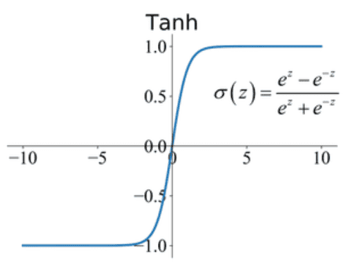
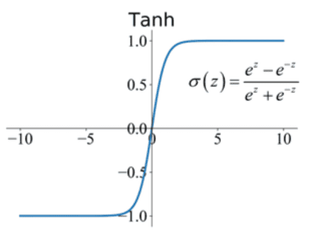

NON_LINEARITY.HTML
Our monkey brain cannot comprehend non-linearity. During evolution, we never had the need to understand non-linearity. Hence, we are not able to wrap our heads around exponential behaviors such as compound interest, etc... Magic happens in non-linearity.
Computers are made out of semiconductor diodes. Semiconductor diodes are electrical components whose relation between the voltage applied across the diode is not linearly related to the current that passes through it. i.e. Ohm's law does not apply to semiconductor diodes.
 Artificial neural networks are an entity which is modeled after our brain. One of the fundamental building blocks of neural networks is an activation function. This is a non-linear function that inputs a linear equation and outputs a single value between 0 and 1.

Artificial neural networks are an entity which is modeled after our brain. One of the fundamental building blocks of neural networks is an activation function. This is a non-linear function that inputs a linear equation and outputs a single value between 0 and 1.
